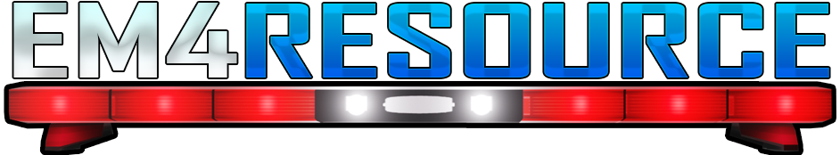

Skip to content

Menu
☰
Home
Downloads
Guides & tutorials
E4M+ Launcher
Search EM4Resource
Search the library
✕
Search articles, commands, or file types
→
Search titles, topics, and the full text of every guide.
ESC to close
Please enable JavaScript to browse the article library.